простая прекрасная жизнь
С самого начала мы хотели делать не «еще один ретрит-центр», и уж тем более не «еще одну гостиницу». Наша цель гораздо сложнее и намного интереснее.
Мы хотим предложить вайшнавам особенный опыт пребывания во Врадже. Опыт максимального погружения в бхаджан. Опыт тотального задействования всех чувств в служении. Опыт простой и прекрасной жизни в сознании Кришны у подножия Гирираджа. Мы уверены, что этот опыт оставит глубокие духовные самскары.
Составив список того, что может помочь достижению этой цели, мы постарались воплотить все это в «Шри Рупа Сева Кундже»:
Красота
Вриндаван, описанный в шастрах, бесконечно прекрасен. Мы постарались воплотить отблеск этого духовного великолепия в нашем ашраме, уделяя внимание каждой детали. Мы постоянно работаем над тем, чтобы архитектура, мебель, сад, киртаны или катха, отношения внутри команды или общение с гостями – все, вплоть до мелочей, было гармоничным и красивым.
Комфорт
Может показаться, что мы говорим о материальных вещах, но на самом деле и красота, и комфорт помогают уму отключиться от бытовых проблем и сосредоточиться на духовном поиске. Так что уютные комнаты с хорошей теплоизоляцией, очищенная вода и стабильное электричество, неострый прасад и даже чистое белье и полотенца – все это становится частью духовной практики.
Камерность
Мы ценим большие вайшнавские фестивали, где собираются сотни или даже тысячи преданных, но для глубокого погружения нужна немного другая атмосфера. Мы намеренно ограничили количество мест в гостевом доме: там могут разместиться не более 72 человек. На наш взгляд, это оптимальное количество, чтобы, с одной стороны, проводить вдохновляющие программы, с другой – иметь возможность личного взаимодействия с каждым.
Служение
Все слышали о том, что пребывание во Вриндаване должно быть служением. Но что это значит на практике? Мы делаем ретриты с полным погружением в служение – служение Бхагаватам, служение Враджу, служение вайшнавам и Святому Имени. Расписание составляется таким образом, чтобы одновременно занять участников ретритов, но не перегружать их.
Общение
Общение с возвышенными вайшнавами – необходимое условие для духовного продвижения, поэтому на каждый ретрит мы стараемся пригласить несколько садху. Для того чтобы получить больше общения со святыми вайшнавами, мы даже купили землю по соседству и строим там «садху-лэнд», закрытую территорию, на которой духовные учители и наставники могут спокойно жить, погружаясь в бхаджан, и иногда приходить к нам, чтобы поделиться сокровищами своего сознания Кришны.
Красота в деталях